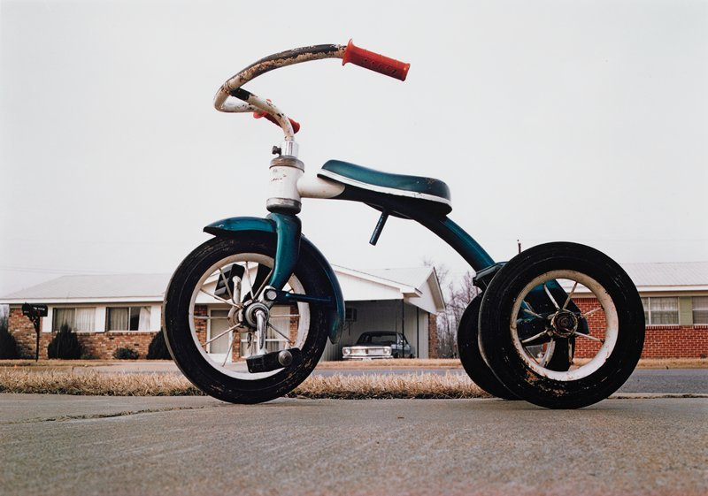

Memphis
William Eggleston · c. 1970 · Dye transfer print · 30.64 × 43.66 cm (image) · Minneapolis Institute of Art
In copyright. Look and learn: shown for study, not for download.
This is a dye transfer print, a process William Eggleston found between 1973 and 1974 on the price list of a photographic lab in Chicago, where it was offered as the ultimate print. At the lab it was being used for commercial pictures of cigarette packs and perfume bottles. He was about thirty-one when he took the picture. John Szarkowski of the Museum of Modern Art had first seen his work in 1969, as a suitcase full of drugstore colour prints, and the museum exhibited him in 1976.